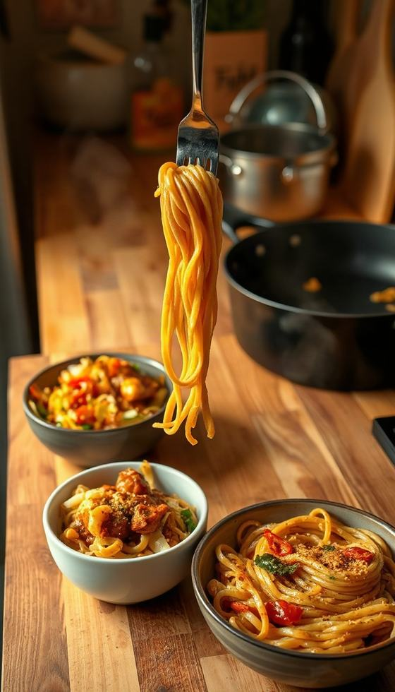
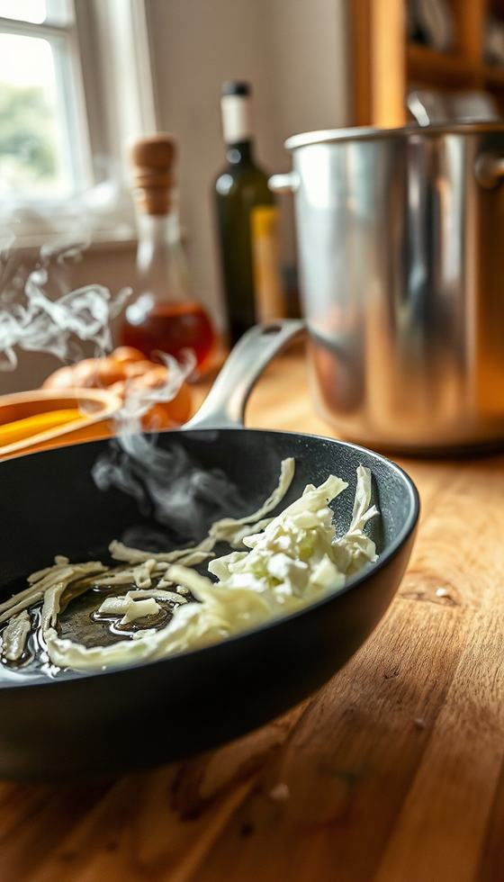

3 Ways, 1 Ingredient
One Box of Spaghetti, 3 Ways: Copycat Panda Express Chow Mein, Garlic Noodles and Aglio e Olio
About $3.40* · 3 servings · 20 min
*Prices are estimates and may differ from what you pay. How we price recipes
Copycat Panda Express chow mein, garlic noodles AND aglio e olio, all from one $1.20 box of spaghetti. Three dinners, $3.40 total, $1.13 a plate.





Ingredients
- 1 lb spaghetti
- 1 tablespoon kosher salt for the pasta water (pantry)
- 1 tablespoon neutral oil
- 2 cups thinly shredded green cabbage
- 2 tablespoons soy sauce
- 3 tablespoons butter
- 10 garlic cloves total (6 minced, 4 thinly sliced)
- 1 tablespoon oyster sauce
- 3 tablespoons olive oil
- 1/2 teaspoon red chili flakes
- 1 cup reserved pasta water
Steps
- Bring 4 quarts of water and 1 tablespoon of salt to a rolling boil in a large stock pot. Cook 1 lb spaghetti for 9 minutes, until just al dente. Reserve 1 cup of pasta water, drain, and divide the noodles into three portions.
- Chow mein: heat 1 tablespoon of oil in a 12-inch nonstick skillet over medium-high heat. Add 2 cups of shredded cabbage and cook 2 to 3 minutes until wilted with golden edges.
- Add one portion of spaghetti and 2 tablespoons of soy sauce. Toss with tongs for 2 minutes until the noodles are glazed and lightly browned. Plate and wipe out the skillet.
- Garlic noodles: melt 3 tablespoons of butter over medium heat, add 6 minced garlic cloves and cook 1 minute until fragrant, not brown. Stir in 1 tablespoon of oyster sauce.
- Add the second portion of spaghetti plus 2 tablespoons of pasta water and toss 1 minute until glossy. Plate and wipe out the skillet.
- Aglio e olio: warm 3 tablespoons of olive oil over medium-low heat with 4 thinly sliced garlic cloves for 2 to 3 minutes until pale gold. Add 1/2 teaspoon chili flakes for 15 seconds.
- Add the last portion of spaghetti and 1/4 cup of pasta water. Toss vigorously for 1 minute until the oil and water emulsify into a silky sauce. Serve all three hot.
What you'll need
Gear links go to Amazon (Amazon.ca, or Amazon.com in the US). As an Amazon Associate I earn from qualifying purchases, at no extra cost to you.
Watch the videoMore $5 recipes
About the prices: they're estimates, not quotes. Since Nov 2026 they're based on Statistics Canada's monthly average retail prices where an item is listed (Open Government Licence - Canada), otherwise on typical Canadian grocery prices, and count only the amount of each ingredient used, not whole packages. What you pay will vary by store, location, brand, sales, taxes and date, and any pantry staples you need to buy will add to it. Recipe visuals and narration are AI-generated.